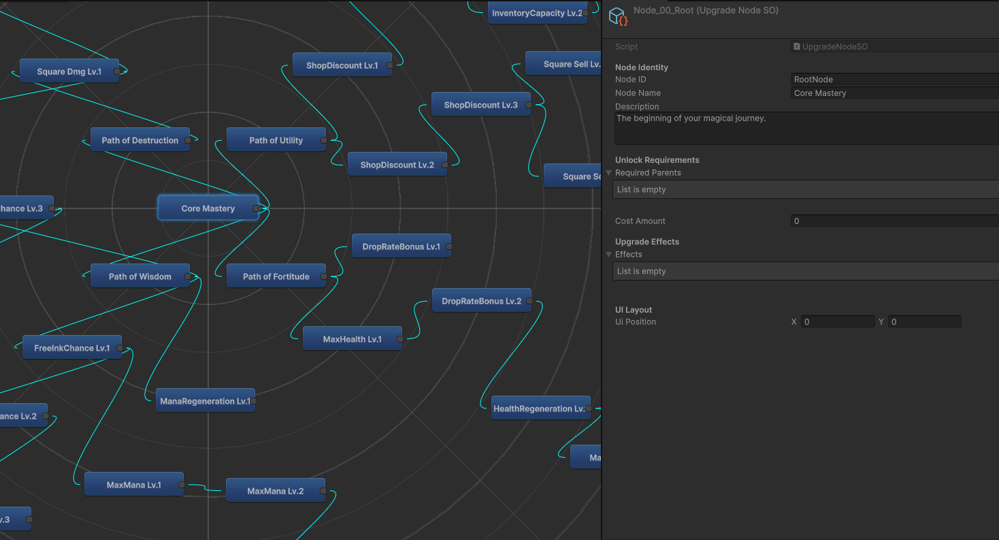

Versatile
Developer
게임, 모바일 앱, 클라우드 웹, 그리고 3D 그래픽까지. 플랫폼의 한계를 두지 않고 어떤 아이디어든 현실로 구현해냅니다.
About Me
한계 없는 성장을 지향하는 올라운더(All-rounder) 개발자 입니다. Unity 기반의 VR 게임부터, Flutter 크로스 플랫폼 앱, Node.js와 Docker를 활용한 클라우드 웹 아키텍처 구축, 그리고 Blender 3D 캐릭터 모델링까지 기술과 플랫폼의 경계를 넘나듭니다. 단순히 기능만 구현하는 것을 넘어 어떻게 최고의 디지털 경험을 제공할 것인가를 고민합니다.
📧 Email: iam0817jun@gmail.com
💻 GitHub: github.com/LJS0817
Tech Stack & Tools
Education & Awards
한국게임과학고등학교
게임개발학과
가천대학교
컴퓨터공학과
- 🏆 스마틴앱챌린지 우수상
- 🏆 전북 기능성게임 제작대회 우수상
- 🏆 가천대 P-학기 프로젝트 우수상
- 📜 정보처리기능사
- 📜 네트워크관리사 2급
Unity Projects

Mine
스펠렁키를 모티브로 한 픽셀 아트 컨셉의 2D 동굴 탐험 액션 게임. 한정된 산소와 횃불 등 생존 자원을 관리하며 함정과 몬스터를 피해 거대한 벌레의 동굴을 탈출해야 합니다.
· 기술 스택
· 주요 개발 사항
-
Texture2D픽셀 연산을 직접 활용한 실시간 Fog of War (전장의 안개) 미니맵 시야 개척 시스템 자체 구현 - 시간 경과에 따라 광원 반경과 파티클이 점진적으로 감쇠하는 2D Dynamic Lighting & 횃불 생존 시스템 구축
- 생존 자원(HP, 산소, 횃불 연소, 음식)을 유기적으로 관리해야 하는 서바이벌 게임 루프 구현
- 동굴 내 다양한 몬스터 AI(유령 배회, 박쥐 급강하), 함정 기믹 및 물리 충돌 판정 구현
- 인터넷 사운드 소스를 GoldWave로 직접 편집 및 노이즈 보정하여 동굴 앰비언스 적용
· 주요 기술 및 구현 상세
외부 플러그인 없이
Texture2D.SetPixel()과
Graphics.CopyTexture()를
활용하여 전장의 안개(Fog
of War) 시스템을 자체
구현했습니다. 플레이어의 월드
좌표를 미니맵 텍스처 좌표로
실시간 변환하고 이동 경로
반경의 알파값을 투명(0)으로
뚫어 탐색한 동굴 지형을
실시간으로 밝혀주는 시야 개척
메커니즘을 완성했습니다.
동굴의 어두운 환경을 연출하기
위해 2D
Lighting과
Particle
System을
유기적으로 결합했습니다.
횃불의 남은 연소 시간에 따라
광원
반경(Light.range)과
파티클 크기를 실시간
Lerp
감쇠시켜 시각적 긴장감을
부여했으며, 맵 내
횃불과 접촉 시
들고 있는 횃불을 즉시
재충전하는 시스템을
구현했습니다.
노력한 점: 2D Lighting과 Particle System을 결합해 시각적으로 현실감 있는 횃불을 구현했습니다. 시간 경과에 따라 횃불이 서서히 꺼지고, 근처 횃불과 상호작용하여 다시 불을 붙일 수 있는 유기적인 생존 기믹을 완성했습니다.
느낀 점: 구현에 필요한 기술적 난관에 부딪혔을 때 공식 문서와 오픈소스 레퍼런스를 신속하게 분석하고 내 것으로 흡수하는 자발적 리서치 역량의 중요성을 배웠습니다. 또한 프로그래밍에만 갇히지 않고 아트 등 타 직군의 작업 프로세스를 폭넓게 이해하고 있을 때 팀 전체의 의사소통이 훨씬 매끄럽고 생산적인 협업이 가능함을 깨달았습니다.
📸 Screenshots


Taskkill
드론을 통한 해킹과 총과 나이프를 활용해 적의 감시를 뚫고 에너지가 모두 닳기 전에 다음 챕터로 가는 엘리베이터에 도달하는 3D 잠입 액션 슈팅 게임입니다.
· 기술 스택
· 주요 개발 사항
-
Transform.forward/right/up기반 9방향 레이캐스트 및 레이어마스크를 활용한 3D 시야각(FOV) 감시망 구축 - 레인보우식스 시즈를 오마주한 정찰 드론 시스템 구현
- ASCII 난수 조합 텍스트 생성 및 무선 해킹 파이프라인 구현
- Shader Graph Dissolve 셰이더 프로퍼티 런타임 제어
- 충돌면 Normal 회전 행렬 연산 총알 흔적 이미지 부착 및 재질(Metal, Glass, Wood, Pillow)별 효과 구현
· 주요 기술 및 구현 상세
Transform.forward(중앙
1),
Transform.right/Transform.up(상하좌우
4), 대각 모서리 4개 등
총 9개 방향
벡터(EndPoint[9])를
실시간 선형 결합하여 3D
시야각을
수학적으로 형성했습니다.
레이어마스크(~((1 << LayerMask.NameToLayer("CCTV_Glass"))))로
유리창 투과와 벽면 차폐를
분기 연산하고,
Mathf.MoveTowards로
인지
게이지를
실시간 누적하여 발각 상태
머신을 제어했습니다. 또한
CCTV
부위별 사격 피격 판정 및
조명
소등, 고장 연기/스파크
파티클 출력 등 보안 무력화
메커니즘을 완성했습니다.
플레이어 본체와 드론 간 1인칭 카메라 시점 전환을 지원하며, 이동 속도에 따른 바퀴 3D 회전 물리와 도약 점프를 구현했습니다. 또한 배터리 잔량 실시간 감소, 방전 시 화면 노이즈, REC 타임코드 UI 연출을 적용하였고, 보안문에 접근하여 E키를 홀딩하면 ASCII 랜덤 조합 텍스트 연출과 함께 일정 시간 후 잠금장치를 해제하도록 구현했습니다.
노력한 점: 플레이어 캐릭터의 로봇 컨셉에 맞추어 기계적인 UI 연출과 모션 디테일에 많은 신경을 썼습니다. 게임의 시각적 완성도와 타격감을 높이기 위해 적이 사망하거나 특정 물체를 사격했을 때 모든 파츠가 물리적으로 분리되도록 구현하였으며, 오브젝트마다 태그를 구분하여 전용 사운드와 파편 파티클 효과가 다르게 나타나도록 구현했습니다.
느낀 점: 작은 시각·청각적 디테일들이 쌓여 게임 전체의 완성도와 몰입감을 크게 높여준다는 점을 배웠습니다. 특히 2D Canvas 대신 메인 메뉴 UI를 3D 월드 공간 오브젝트와 마우스 레이캐스트으로 직접 클릭하고 상호작용하도록 구현해 보며, 기존의 정형화된 틀을 벗어난 새로운 UI/UX 설계 방식을 경험할 수 있어 신선하고 의미 있는 도전이었습니다.
📸 Screenshots


Magic (가제)
마법 스크롤을 제작 및 판매하여 상점을 운영하고, 더 강력한 마법진과 희귀 재화를 얻기 위해 헥사곤 던전을 탐험하는 경영 & 체감형 액션 RPG입니다.
AI 활용 범위: 게임 기획 보조, 전반적인 플레이/UI/에디터 자동화 C# 프로그래밍, 코드 최적화 보조, 2D Sprite 생성
· 기술 스택
· 주요 개발 사항
- 제스처 드로잉 마법 시스템: 플레이어가 입력한 좌표 데이터를 실시간 샘플링하여 템플릿과의 유사도를 점수화해 마법 시전
- 공간 규칙 콤보 알고리즘: 도형 간의 공간적 관계(Inside, Surround)와 중복 방지 규칙을 수학적으로 분석해 콤보 발동
- AP 기반 헥사곤 탐색: Cost 기반의 헥스 패스파인딩으로 이동 범위 시각화 및 타일 미리보기 기능
- 커스텀 노드 에디터 (Upgrade System): Unity EditorWindow를 확장하여 스킬/업그레이드 트리를 시각적으로 배치하고 연결할 수 있는 전용 에디터 툴 자체 개발
- 에디터 자동화 파이프라인: ScriptableObject 자동 생성 및 C# 스크립트에 연결 자동화를 구축
- AI 기반 아트: 생성형 AI 프롬프팅으로 스크롤, 마법 아이콘, 타일맵 텍스처 등 2D 아트 리소스 자체 조달
· 주요 기술 및 구현 상세
마우스 입력을 64개의 균일한 점으로 샘플링하여 사전에 등록한 제스처 템플릿과 비교하는 인식 알고리즘을 구축했습니다. 점 간격이 0일 때 발생할 수 있는 나눗셈 에러와 무한 루프를 방지하기 위해 방어 로직을 구현하여 어떤 입력 환경에서도 안전한 제스처 인식을 보장했습니다.
Unity
EditorWindow를
커스텀 확장하여 복잡한 스킬
및 업그레이드 트리를
시각적으로 배치하고 연결할 수
있는 전용 노드 에디터를
개발했습니다.
노력한 점: 플레이어가 마우스로 자유롭게 그린 도형을 인식 정확도를 높이기 위해서 기존 샘플링 점의 개수를 32개에서 64개로 늘렸습니다. 또한 업그레이드 트리를 효율적으로 배치 및 관리하기 위해 Unity EditorWindow를 커스텀 확장하여 노드를 시각적으로 연결할 수 있는 에디터 툴을 개발하고, ScriptableObject 자동 생성 및 C# 스크립트 연결 자동화 파이프라인을 구축해 개발 효율성을 높였습니다.
느낀 점: 단순히 게임 플레이 기능을 구현하는 데 그치지 않고, 개발 과정의 편의를 위해 자체 에디터 툴과 자동화 스크립트를 제작해 보며 개발 편의성이 개발 속도에 큰 영향을 미치는 것을 알았습니다. 또한 AI를 활용하면서 전체적인 코드를 한 번에 요청하기보다, 기능 단위로 나누어 명확한 조건을 가지고 요청하는 방향이 설계 의도에 맞는 코드를 도출한다는 것을 깨달았습니다. 그렇게 생성된 코드를 직접 검증 및 보완하며 AI를 개발 생산성 도구로 사용하는 방법을 익혔습니다.
📸 Screenshots




CatcherVR
Meta Quest 2 환경에서 플레이어가 직접 포수가 되어 정밀한 투구와 타구를 경험하는 VR 야구 시뮬레이션 게임입니다.
AI 활용 범위: 수비수(야수 AI) 코드 최적화와 움직임 및 판단 기능 스크립트 고도화, 공격수(타자 AI) 코드 최적화와 스윙 판단 및 베이스 러닝 기능 스크립트 고도화, 스트라이크/볼 판정, 스트라이크/볼/아웃/베이스 UI 표시 스크립트
· 기술 스택
· 주요 개발 사항
- 투수 구질 물리 시스템: 포심, 투심, 슬라이더, 커브, 체인지업 등 다양한 구질별 속도와 실시간 가속도 제어를 통해 사실적인 투구 궤적 변화 구현
- 물리 기반 실시간 궤적 예측: 선형 속도와 질량 기반 물리 연산으로 타구 순간 정확한 낙구 지점을 예측하고 궤적을 시각화
- 역할(Role Assignment) 기반 수비 AI: 수비수 객체들이 타구 방향과 낙구 지점을 실시간 분석해 유기적으로 방어 포지션을 수행하는 구조 구현
- VR 상호작용 및 규칙 구현: XR Interaction Toolkit 커스텀을 통해 글러브 물리 충돌체 연동, 플라이 아웃 및 스트라이크 존 통과 등 야구 플레이 로직 적용
· 주요 기술 및 구현 상세
배트에 맞는 순간 공의 속도, 방향을 바탕으로 타구의 실시간 포물선 궤적과 최종 낙구 지점을 수학적으로 연산했습니다. 투구/타구/포구 등 물리 이벤트 주도권을 상태 플래그로 분리하고 공기 저항 감쇄 공식을 정밀 보정하여 오차 없는 궤적 계산을 완성했습니다.
타구 발생 시 계산된 낙구 좌표와 방향을 기반으로 가장 인접한 수비수가 공을 포구하도록 타겟을 할당하고, 나머지 수비수들은 백업 커버 및 베이스 수비로 전환하는 지능형 수비 구조를 구현했습니다.
노력한 점: VR 환경에서는 화면 너머로 보는 것과 달리 공이 날아오는 속도감과 체감 타이밍이 크게 다르기 때문에, 포심·슬라이더·커브·체인지업 등 다양한 구질별 비행 속도와 변화 타이밍을 어색함 없이 포구할 수 있도록 세밀하게 수치를 조율했습니다. 또한 타격 발생 시 수비수들이 움직임이 없거나 겹치지 않고 낙구 지점으로 달려가 포구하거나 각자 담당 베이스를 커버하도록 유기적인 수비 AI 흐름을 구축하는 데 집중했습니다.
느낀 점: VR은 일반 3D 게임과는 자유로운 시점에서 느껴지는 몰입감이 가장 큰 특징이라는 것을 느꼈습니다. 또한 여러 AI 캐릭터들이 상황에 맞게 서로 역할을 분담하고 협력하는 로직을 구현하며, 스포츠 게임은 포지션의 역할과 게임 상태를 체계적으로 제어하는 설계가 중요하는 것을 알았습니다.
📸 Screenshots


SniperVR
Unity와 Arduino 간의 시리얼 데이터 통신을 테스트하기 위해 제작한 하드웨어-소프트웨어 연결 테스트 프로젝트입니다.
AI 활용 범위: 아두이노 하드웨어 컨트롤 보조, 아두이노와 Unity USB 시리얼 통신 코드 보조, 하드웨어 상호작용 시 유니티 내에서 스코프 조작 기능 스크립트 보조
· 기술 스택
· 주요 개발 사항
- 컨트롤 시스템 (VR + Arduino): 조준선 이동은 VR 컨트롤러 트래킹으로 처리하고, 스코프 영점(상하/좌우) 및 줌 조작은 로터리 엔코더 3개를 연결한 아두이노로 제어
- 볼트 액션 장전 메커니즘: 슬라이드 가변저항의 이동 값과 유니티 총기 부품 위치를 동기화하고 거리에 따른 탄피 배출 구현
- 시리얼 데이터 파싱 아키텍처: 이벤트 주도형 비동기 처리로 변경 감지 시에만 이벤트 발송 구현
· 주요 기술 및 구현 상세
로터리 엔코더의 값 바운싱으로 인한 오입력을 방지하기 위해 외부 인터럽트와 상태 테이블을 도입했습니다. 값 변화를 즉각 감지하고 비정상적인 회전 노이즈를 필터링하여 물리적 다이얼의 한 번 돌려도 값이 1씩 변하도록 구현 했습니다.
레이캐스트로 조준한 목표물과의 거리를 측정하고, 중력과 바람 편차를 계산했습니다. 연산된 위치에 실시간 탄착 가이드 마커를 표시하고, 스코프 줌 배율과 거리에 따라 마커 스케일을 자동 보정하여 플레이어가 거리에 맞춰 직관적으로 영점을 조절할 수 있도록 구현했습니다.
노력한 점: 아두이노 하드웨어와 유니티를 연동하는 과정에서 로터리 엔코더의 바운싱으로 값이 튀거나 누락되는 현상을 막기 위해 외부 인터럽트를 구성했습니다. 또한 인터넷에서 구한 3D 총기 모델을 직접 부품을 분리하여 하드웨어를 조작할 때 3D 모델 부품도 따라 움직일 수 있게 구현했습니다.
느낀 점: 소프트웨어 구현에 그치지 않고 실제 하드웨어 센서를 다루며 기계적 노이즈를 소프트웨어 단에서 값을 제어할 수 있다는 것을 알았습니다.
📸 Screenshots


Flutter Projects

Card Usage Tracker
카드 사용 내역을 직접 기록하고 추적하기 위한 가계부 어플리케이션으로, 부드러운 화면 전환 애니메이션과 로컬 SQLite 데이터베이스 연동이 특징입니다.
· 기술 스택
· 주요 개발 사항
- Key-Value 구조를 사용하는 shared_preferences는 카드별 지출 내역, 결제일, 카테고리 등 구조화된 데이터를 분류하고 날짜·카드별로 데이터를 조회하기에 한계가 있어, 테이블 간 관계 설정과 빠른 조건 검색이 가능한 sqflite를 도입하여 데이터 관리와 쿼리 성능 최적화
-
flutter_animate패키지를 활용한 직관적이고 부드러운 전환 애니메이션 구현 - 반복되는 소비 항목을 아이콘과 금액이 포함된 프리셋으로 등록해 원터치로 빠르게 기록할 수 있는 편의 기능 구현
· 주요 기술 및 구현 상세
카드 정보, 지출 내역, 자주 쓰는 소비 템플릿(프리셋)을 체계적으로 관리하기 위해 4개의 테이블(card, usage, custom, config)로 구성된 관계형 DB 스키마를 설계했습니다. 카드 ID(cardID)를 기반으로 지출 내역을 연계하고 배치(Batch) 쿼리를 활용해, 지출 추가·삭제 시 잔여 한도 갱신과 데이터 무결성을 안정적으로 유지하도록 구현했습니다.
Provider 패턴을
적용하여 비즈니스 로직과 UI
위젯 간의 의존성을
분리했습니다. 지출 내역 변경
시 필요한 위젯만 부분
렌더링되도록 최적화했으며,
flutter_animate를
활용해 부드러운 전환
애니메이션을 적용했습니다.
노력한 점:
개발 초기에는
shared_preferences를
사용했으나, 카드별 결제일과 지출 내역
같은 데이터를 체계적으로 관리하기 위해
sqflite로
전환하여 4개
테이블로 구조화했습니다. 이후 지출이
추가되거나 삭제될 때마다 카드별 남은
예산이 오차 없이 실시간으로 계산되고
화면에 즉시 반영되도록 데이터 연동에
집중했습니다.
느낀 점: 단순히 데이터를 저장하는 것에 그치지 않고, 사용자가 어떻게 하면 최소한의 터치로 빠르게 가계부를 기록할 수 있을지 고민하며 실사용자 관점의 UI/UX 설계와 데이터 구조화의 중요성을 배웠습니다.

Public Data Weather App
공공데이터포털의 API를 연동하여 실시간 날씨 정보를 제공하는 앱으로, 애니메이션 패키지를 활용해 직관적인 UI를 구현했습니다.
· 기술 스택
· 주요 개발 사항
- 공공데이터포털의 날씨 API를 연동하여 실시간 기상 정보를 성공적으로 파싱 및 화면에 출력
-
Wave와flutter_animate를 활용해 다이나믹하고 시각적으로 표현한 파도 효과와 낮과 밤 시간에 따른 배경 효과 구현 -
wakelock_plus을 적용하여 화면 꺼짐을 방지하고, 10분 주기 자동 데이터 갱신과 실시간 시계 타이머를 결합하여 탁상시계/디스플레이 모드로 활용 가능하도록 구현 - 단 4일간의 짧은 기간 내에 API 신청, 기획, 개발을 진행했으며 중간에 과감한 재디자인을 통해 완성도 향상
· 주요 기술 및 구현 상세
기상청 초단기예보 발표
주기(매시 30분)에 맞춰
현재 시각 기준 45분 미만일
때 이전 시간대 API를
호출하도록 동적 시각 계산
로직(setDate)을
구현했습니다. 복잡한 중첩
XML
응답을
xml2json으로
변환 후 기온, 하늘 상태,
강수량, 습도 등 6개 핵심
기상
지표를 안전하게
추출·매핑했습니다.
API의 하늘
상태(맑음/구름많음/흐림)
값에 따라 구름의
개수(1/5/10개)와 생성
좌표를 동적으로
연산(calculateCloud)했습니다.
생성된 구름 위젯들에
flutter_animate의
무한 왕복
슬라이드(slideX)를
적용하여 날씨 상태에 따라
하늘이
자연스럽게 움직이도록
구현했습니다.
노력한 점:
공공데이터 기상청 API의 복잡하고
중첩된 XML 응답을 처리하기 위해 다양한
리서치 끝에
xml2json
라이브러리를 도입하여 안정적인 데이터
파이프라인을 구축했습니다. 단순 텍스트
나열형
UI에 만족하지 않고, 과감히 레이아웃을
전면 재디자인하여 낮/밤 컬러 전환, 파도
및 구름 애니메이션, 화면 꺼짐
방지를
적용한 감성적인 날씨 디스플레이 앱으로
완성도를 끌어올렸습니다.
느낀 점: API를 활용해 처음부터 끝까지 분석하고 파싱해 화면에 구현하면서, 외부 API나 데이터 문서를 기반으로 분석하면 원하는 형태로 다룰 수 있다는 자신감을 얻고 데이터 연동의 재미를 느꼈습니다

Desk Clock & NowPlaying
탁상시계와 유튜브 뮤직 재생 컨트롤 기능을 결합한 유틸리티 어플리케이션입니다.
· 기술 스택
· 주요 개발 사항
-
기존 패키지에 의존하지 않고
MethodChannel과EventChannel을 직접 구축하여 네이티브(Java)와 Flutter 간 통신 구현 - 안드로이드 스마트폰 알림(Notification)을 감지하여 YouTube Music의 앨범 커버 및 재생 곡 정보를 실시간으로 추출
- 이전곡, 재생/일시정지, 다음곡 등 핵심 미디어 컨트롤 기능을 탁상시계 UI와 매끄럽게 통합
· 주요 기술 및 구현 상세
Android 네이티브
영역에서
NotificationListenerService를
구현하여 YouTube
Music 알림으로부터 곡명,
아티스트, 앨범 아트워크
바이트 데이터를 실시간
추출했습니다.
EventChannel
스트림을 통해 Flutter
UI로 동기화하는
백그라운드 기능을
구현했습니다.
미디어
정보(AudioProvider),
1초 주기 실시간
시계(TimerProvider),
5가지 무드 컬러
테마(ThemeProvider)를
각각 독립된 Provider로
분리했습니다. 불필요한
전체 화면 리빌드를 방지하고,
테마 변경이나 시간 갱신 시
해당 위젯만 효율적으로 부분
렌더링되도록 설계했습니다.
노력한 점: 개발 당시 존재하던 외부 패키지들은 단순 텍스트 정보만 지원하고 앨범 아트 커버나 재생 제어 액션까지는 가져오지 못하는 한계가 있었습니다. 이를 해결하기 위해 패키지에 의존하지 않고 네이티브 통신 코드를 직접 구현하여, 안드로이드 Notification 데이터에서 앨범 아트 커버(비트맵)와 미디어 조작 액션(이전곡/재생/일시정지/다음곡)까지 온전히 추출해 플러터 화면과 연동할 수 있도록 구현했습니다.
느낀 점: 오픈소스 패키지에만 의존하지 않고 필요한 기능을 바닥부터 직접 만들어보면서, 기술적인 제약에 부딪히더라도 스스로 돌파구를 찾아내며 개발하는 문제 해결 능력과 큰 성취감을 느꼈습니다.

Soap & Cosmetic Calculator
비누 및 화장품 제작 시 필요한 복잡한 배합비와 수치들을 계산하고 직관적으로 표시해 주는 계산기 앱입니다.
· 기술 스택
· 주요 개발 사항
- Google Play Store 공식 출시 및 실제 사용자 서비스 운영 경험 확보
- 로컬 파일 입출력(File I/O) 방식을 활용하여 오프라인 환경에서도 레시피 데이터를 빠르고 안전하게 영구 저장
-
permission_handler를 통한 체계적인 파일 권한 관리 및flutter_animate를 활용한 부드러운 상호작용(UX) 구현
· 주요 기술 및 구현 상세
원료별 고유 화학 반응 상수, 투입 용액의 순도, 수분 희석 비율 등 복잡한 다변수 배합 공식을 수학적으로 모델링했습니다. 사용자가 목표 총중량과 원료를 설정하면 각 성분의 반응 비율을 연산하여 최적의 투입량을 정밀하게 산출하도록 알고리즘을 설계했습니다.
네트워크 연결이 없는 오프라인
환경에서도 레시피 데이터를
안전하게
보관하도록 로컬 File
I/O 직렬화 파이프라인을
구축했습니다. 또한
Provider를
기반으로 복잡한 계산 비즈니스
로직과 UI 상태를 철저히
격리하여 데이터 무결성을
보장했습니다.
노력한 점:
초기에 Android(Java)로 개발했던
프로젝트를 Flutter로 전면
재개발(마이그레이션)하면서, 기존에 얽혀
있던 데이터 구조와 계산 시스템을
대대적으로 리팩토링했습니다. 분산되어 있던
복잡한 계산 공식을 전용 매니저로 모듈화하여
연산 효율을 높였으며,
Provider로
UI와 비즈니스
로직을 명확히 분리함으로써 여러 재료를
실시간으로 연산할 때도 화면 끊김 없는
반응성을 확보했습니다.
느낀 점: 기존 코드를 단순히 다른 언어로 옮기기만 하지 않고, 데이터 구조와 시스템 아키텍처를 근본적으로 개선하는 진정한 의미의 리팩토링을 경험했습니다. 이를 통해 체계적인 모듈화가 앱의 전반적인 성능과 유지보수성에 얼마나 큰 영향을 미치는지 다시 한번 깨달았습니다.
Others

CloudNative
VMWare와 Docker를 활용해 11개의 독립적인 컨테이너를 구축하고, 실시간 세션 인증 및 분산 처리를 구현한 클라우드 네이티브 웹 게임입니다.
AI 활용 범위: Docker 설계 보조, Node.js 구축 보조, Socket.io 통신 프로그래밍 보조, EJS 프로그래밍 보조, 스크립트 오류 검출 및 수정, 프로젝트 문서 정리
· 기술 스택
· 주요 개발 사항
- Docker와 Docker Compose를 기반으로 Nginx 역방향 프록시, ejs 템플릿, Node.js 백엔드, MySQL 데이터베이스, Redis 세션 스토어 등 총 11개의 독립적인 컨테이너 연결 및 배포
- Redis 세션을 실시간으로 조회하여 분산 환경 하에 사용자 인증 파이프라인 구축
- Socket.IO 통신과 Node.js 서버 코드를 분리하여 트래픽 분산 처리 및 서버 안정성 확보
- 대부분의 서버 및 클라이언트 스크립트를 재사용성 높게 모듈화
· 주요 기술 및 구현 상세
Nginx 역방향 프록시, EJS 렌더러, Node.js 백엔드, Redis 세션 스토어, MySQL DB 등 총 11개의 독립적인 컨테이너를 Docker Compose로 연결했습니다. 격리된 브릿지 네트워크 환경에서 각 서비스의 의존성과 포트 포워딩을 관리하여 클라우드 네이티브 아키텍처를 구현했습니다.
분산 컨테이너 환경에서 세션 정합성을 유지하기 위해 Redis 인메모리 세션 스토리지를 도입했습니다. HTTP 웹 요청과 웹소켓(Socket.IO) 실시간 게임 통신을 분리 라우팅하여 트래픽 병목을 방지하고 서버 안정성을 확보했습니다.
노력한 점:
Nginx, Node.js,
Socket.IO, Redis,
MySQL 등 11개의 독립적인
마이크로서비스 컨테이너를 Docker
Compose로 엮어 유기적인 분산
환경을 구축했습니다. 특히 개발 도중
VMWare 가상 머신 파일 시스템이
깨지는 치명적인 문제가 발생했을 때,
포기하지 않고 가상
디스크(.vmdk)
파일을 텍스트 에디터로 직접 분석하여
핵심 코드를 수동 복구해 냈습니다.
느낀 점: 단일 서버 구조에서 벗어나 작은 컨테이너로 개별 서비스를 격리하고 역할을 분리하는 마이크로서비스 아키텍처를 경험하며, 유니티에서도 특정 스크립트에 의존하지 않고 모듈형으로 확장 가능한 게임 시스템을 설계하는 법을 배웠습니다.
📸 Screenshots


P-Project (AI 아이트래킹 시뮬레이터)
디자인 시안을 분석하여 사용자 시선 집중도를 히트맵으로 시각화해주는 AI 기반 웹 서비스입니다.
AI 활용 범위: 데이터베이스 구조 분석, Node.js 프로그래밍 보조, 프론트엔드-백엔드 데이터 처리 프로그래밍, 프론트엔드 UI 디자인 참고자료 생성, 프론트엔드 UX 보조, 프론트엔드 CSS 보조
· 기술 스택
· 주요 개발 사항
- AI 모델을 활용해 디자인 시안의 사용자 시선 집중도를 분석하고 히트맵 오버레이로 시각화하는 전체 시스템 플로우 구축
- 사용자가 이미지를 간편하게 드래그 앤 드롭으로 업로드할 수 있는 직관적인 ejs 기반 프론트엔드 구현
- 프로젝트 관리(PM)로 리소스가 부족했던 백엔드 팀장을 대신해 서버 라우팅 및 데이터 가공 로직 일부를 자발적으로 지원하여 일정 방어
· 주요 기술 및 구현 상세
AI 모델이 분석한 디자인 시안의 시선 집중도 좌표 데이터를 HTML5 Canvas 위에 가우시안 블러 및 그라디언트 기반 히트맵으로 실시간 시각화하는 뷰어를 구현했습니다. 이미지 해상도에 맞춘 반응형 캔버스 스케일링으로 시각적 정확도를 확보했습니다.
사용자가 디자인 이미지를 직관적으로 드래그 앤 드롭하여 업로드할 수 있는 비동기 파일 처리 UX를 설계했습니다. 백엔드 일정 지연을 방어하기 위해 Node.js 서버 라우터 설정 및 AI 예측 API 연동 파이프라인을 직접 지원하여 완성했습니다.
노력한 점: 프론트엔드 팀원의 실무 경험 부족과 백엔드 팀장의 PM 업무 과중으로 일정이 지연될 위기에서, 주도적으로 프론트엔드를 구축하고 팀원에게 적합한 서브 태스크를 재분배했습니다. 더불어 Node.js 서버 라우터 설정 및 데이터 가공 로직까지 자발적으로 도맡아 팀 전체의 병목을 해소하고 3주라는 제한된 일정 내에 프로젝트를 성공적으로 끝낼 수 있었습니다.
느낀 점: 팀 프로젝트에서는 단순히 내 담당 파트만 끝내는 것에 안주하지 않고, 할 수 있는 범위 내에서 프로젝트의 병목을 파악해 부족한 부분을 유연하게 채워주는 것 또한 필요하다는 것을 느꼈습니다. 또한 팀원의 역량에 맞춘 현실적인 업무 재분배가 프로젝트 성공의 핵심임을 배웠습니다.
📸 Screenshots


3D Character Models
Blender를 활용해 제작한 3D 캐릭터 모델링으로, 눈, 입, 귀 등을 독립적으로 제어하여 다채로운 표정 연출이 가능합니다.
AI 활용 범위: Varco, Gemini nano banana로 캐릭터 2D 이미지 생성, Blender 기능 추천 및 사용법 표시, Blender Shape Keys와 Unity Skinned Mesh Renderer 연동 기능 스크립트 보조
· 기술 스택
· 주요 개발 사항
- Varco 및 Gemini AI를 활용하여 모델링의 모티브가 되는 2D 원화(레퍼런스 이미지)를 창의적이고 효율적으로 생성
- 유튜브 튜토리얼을 주도적으로 학습하며 응용 모델링 기법 터득 및 완성
- 쉐이프 키(Shape Keys)와 부분 리깅을 통해 눈, 입, 귀 파츠를 독립적으로 세밀하게 제어
- 다양하고 자연스러운 표정과 애니메이션 연출 구현
· 주요 기술 및 구현 상세
캐릭터의 눈 깜빡임, 입 모양, 귀 움직임 등을 각각 독립적인 쉐이프 키(Shape Keys)로 분리 제작했습니다. 각 표정 채널이 서로의 메쉬를 침범하지 않고 자연스럽게 가중치가 블렌딩되는 표정 모핑 시스템을 구축했습니다.
애니메이션 시에 분리되지 않은 메쉬 구조에서 발생하기 쉬운 주변 버텍스 일그러짐을 방지하기 위해 파츠별 가중치를 정밀 보정했습니다.
노력한 점: 초기에는 눈, 코, 입 부위의 표정 변화를 본 리깅(Rigging)을 통해 구현하려 했으나 메쉬가 일그러지는 한계가 있어, 쉐이프 키(Shape Key) 기능을 도입해 자연스러운 표정 모핑을 완성했습니다. 또한 Unity 엔진에서 쉐이프 키가 인식되지 않던 문제를 Blender의 익스포트 설정과 메쉬 옵션을 조정하여 정상적으로 연동되도록 해결했습니다.
느낀 점: 전문 교육 과정 없이도 공식 문서와 튜토리얼을 스스로 탐구하고 응용하여 새로운 툴(Blender)과 3D 제작 기술을 익힐 수 있다고 느꼈습니다.
📸 Screenshots